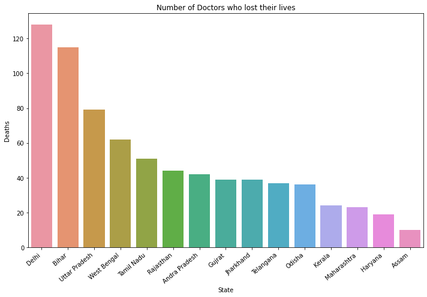

How Bad Was COVID19 Second Wave?
India's surge in infections began around mid-March and increased rapidly, reaching a peak of more than 400,000 recorded daily cases on Friday, 30 April. Over subsequent days the numbers fell, with just under 360,000 on Monday, 3 May - leading to speculation that a peak had been reached. But in the past few days, they have started to rise again, in line with a weekly pattern of fluctuations that shows the numbers usually dipping on a Monday. And on Thursday, 6 May, the number of new recorded daily infections reached a new high of more than 414,000.
India has recorded 26 million Covid-19 cases - second only to the US. It is the new epicentre of the global pandemic. The second wave in recent weeks has overwhelmed the healthcare system, leaving hospitals struggling to cope and critical drugs and oxygen in short supply. Since February 2021, countless lives have been lost in India, which has compounded the social and economic devastation caused by the second wave of COVID-19. The sharp surge in cases across the country overwhelmed the health infrastructure, with people left scrambling for hospital beds, critical drugs, and oxygen. As of May 2021, infections began to come down in urban areas. However, the effects of the second wave continued to be felt in rural areas. This is the worst humanitarian and public health crisis the country has witnessed since independence; while the continued spread of COVID-19 variants will have regional and global implications.
With a slow vaccine rollout and overwhelmed health infrastructure, there is a critical need to examine India’s response and recommend measures to further arrest the current spread of infection and to prevent and prepare against future waves. This brief is a rapid social science review and analysis of the second wave of COVID-19 in India. It draws on emerging reports, literature, and regional social science expertise to examine reasons for the second wave, explain its impact, and highlight the systemic issues that hindered the response. This brief puts forth vital considerations for local and national government, civil society, and humanitarian actors at global and national levels, with implications for future waves of COVID-19 in low- and middle-income countries.

IMA flags 800 doctor deaths in second wave!!
There are some among 800 doctor deaths that the Indian Medical Association (IMA) has counted in the second wave of Covid-19 this year. A majority were from Bihar and Delhi, as per the IMA, which has maintained a state-wise registry of doctors who died of Covid-19. Analysis is underway to assess how many were fully vaccinated or had received one jab. Preliminary findings, however, show few among them had received full vaccination. A majority also had to receive their first vaccine dose. To date, the IMA data shows that more than 1,500 doctors have died of Covid-19. The IMA has declared ‘Save the Saviours’ as the theme of this year’s National Doctors’ Day, which is observed on July 1.
Dr Jayesh Lele, secretary general of IMA headquarters, told that studies were underway and information was being collected from each state regarding the number of doctors who had succumbed and the number of doctors who had been administered either one or both doses. “So far, we have the data of 800 doctors in our registry and initial observations indicate that a majority were yet to be fully vaccinated. Not many had got the first dose of the Covid-19 vaccine,” Dr Lele said, adding that they were also looking at data where young doctors had succumbed to Covid-19 and, among primary reasons, could be exposure to high viral load in ICUs or CCUs. He, said the analysis was underway.
According to the state-wise list of doctors who died in the IMA Covid registry, 128 medicos were from Delhi, 115 from Bihar and 79 from Uttar Pradesh, who succumbed to the infection. West Bengal reported 62 deaths of doctors followed by 51 in Tamil Nadu, 44 in Rajasthan, 42 in Andhra Pradesh, 39 each in Gujarat and Jharkhand, 37 in Telangana, 36 in Odisha, 24 in Kerala and 23 in Maharashtra. Haryana reported 19 deaths while Assam reported 10. Last year, the toll among this high-risk group was 754. Then, the highest numbers were from Tamil Nadu and West Bengal.

Salute To All The Brave Hearts

DR K ROJI
Roji, 23, who was treating Covid-19 patients at Subbamma Covid Stabilisation Centre in Sakhinetipalli in East Godavari district of Andhra Pradesh died due to the infection. After completing her MBBS at Alluri Seetha Ramaraju Academy of Medical Sciences (ASRAM) College in Eluru, Roji served as a house surgeon at ASRAM Hospital. While pursuing her MS (Master of Surgery), she was also saving the lives of those infected with coronavirus. However, she contracted the virus a few days ago and was admitted to a local hospital on Monday. She died within hours.

DR ANAS MUJAHID
Dr Anas Mujahid, 26, was working at the GTB Hospital which has been converted into a designated Covid-19 hospital. He had completed his internship after MBBS in January. A resident of North-East Delhi’s Bhagirathi Vihar, the 26-year-old doctor was on duty at the Ob-Gyn ward till Saturday afternoon. He got tested for the virus at 8 pm, as per an Indian Express report, and died due to intracranial bleeding around 3 am on Sunday. The second wave in recent weeks has overwhelmed the healthcare system. He had no co-morbidities.
DR SHANMUGAPRIYA
DR SHANMUGAPRIYA, the Medical Officer at Anuppanadi Urban Primary Health Centre (UPHC) was eight-months pregnant when she succumbed to COVID-19 on May 8. And after working at the UPHC until April 30, Dr Shanmugapriya went on maternity leave from May 1. “However, she was hospitalised at a private medical college hospital on May 1 after she developed severe cough,” the husband said. She was tested positive for COVID and was later diagnosed with 70% lung infection. The doctor was later shifted to Government Rajaji Hospital where she continued to be in critical condition until she breathed her last on May 8.
DONATE TO IMA
"Actions Speak Louder Than Words"
1492 Modern Medicine Doctors have sacrificed their lives in the service of the nation in the COVID 19 pandemic. Many have left behind families and children who require help for sustenance, education and upbringing.
CONTRIBUTE GENEROUSLY!